NAIF - Examples
Table of Contents
- Example 1. Single trend-following agent
- Example 2. Two fundamentalists generate multiple equilibria
- Example 3. Constant yield vs. growing dividend
- Example 4. Mean-variance optimizer with truncated investment function
- Example 5. Two mean-variance optimizers with truncated investment functions
- Example 6. Dynamics close to instability
- Example 8. Non-trivial Transitions between Different Equilibria
- Generating many similar agents
Find below several examples of simulations performed with naif. THe
configuration files used in the example are distributed with the
software but you can create the files yourself with any text editor.
Example 1. Single trend-following agent
We start with a simple example with a single trader. Create the file
test01.cfg with the following line
x=.5,w=1,f=.5+.1*ret1
This line defines a "trend-follower" type of agent. Its initial wealth
is equal to one (w=1). Initially it invests \(1/2\) of its wealth in the
risky security (x=.5). In the following time steps, the investment is
proportional to the last realized return (f=.5+.1*ret1): if the price
of the asset remains fixed, that is the return is zero (ret1=0), it
invests half of his wealth in the risky security. If the return is
positive this share increases, if the return is negative the share
decreases. Now consider the following command
naif -O r -t 40 -D mean=.02 -r .01 < test01.cfg
It will print the returns history (-O r) for 40 time steps (-t 40)
of a market populated by the agent above where the risky asset has
constant yield equal to $.02$ (-D mean=.02) and the risk-free return
is equal to $.01$ (-r .01). Using instead the command
naif -O r -t 40 -D type=1,mean=.02,stdev=.02 -r .01 < test01.cfg
one obtains the return history when a noise component is introduced in
the risky yield (stdev=.02). The time series of both price returns
are reported below
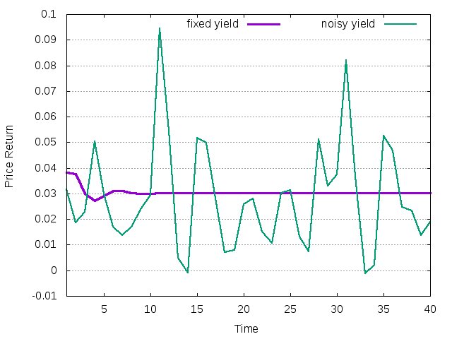
Figure 1: Price return history for single trend-following agent
It is interesting to see what happens in the EMC (Equilibrium Market Curve) plane defined by the price return and the agent's investment share. To draw the trajectory in this plane one can use the command
naif -O rx -t 40 -R mean=1 -D mean=.02 -r .01 < test01.cfg
that prints price return and investment share on separate columns (-O
rx). In this case we additionally specify the initial return (-R
mean=1) to visualize fluctuations better.
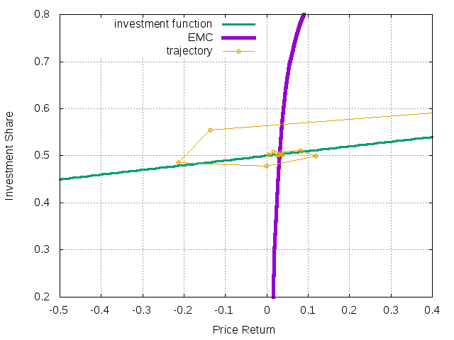
Figure 2: Trajectory in the EMC plane for single trend-following agent
The plot was obtained using gnuplot with the following code
rf=.01
y=.02
set grid
set xlabel "Price Return"
set ylabel "Investment Share"
plot [-.5:.4][0.2:.8]\
.5+.1*x w l lt 2 lw 3 title "investment function",\
(x-rf)/(x+y-rf) w l lt 1 lw 5 title "EMC",\
"< ./naif -O rx -t 40 -R mean=1 -D mean=.02 -r .01 < test01.cfg" w lp lt 4 pt 6 ps 1 notitle
It displays agent's investment function and the EMC. The latter depends on the risk-free interest rate and yield. As expected, the system converges to a stable fixed point, which is the intersection of the investment function of the agent and the EMC.
Example 2. Two fundamentalists generate multiple equilibria
Consider now the case of two agents that invest a fixed amount of
wealth in the risky-security, \(0.5\) and \(-0.5\) respectively. In this
case the market has two stable equilibria. In one equilibrium only the
first agent survives while in the second both do. Which equilibrium is
selected depends on the initial conditions. Create the file
test02_1.cfg with the following lines
x=.5,w=1,f=0.5 x=.8,w=.7,f=-0.5
and the file test02_2.cfg defined as follows
x=.5,w=1,f=0.5 x=.8,w=.1,f=-0.5
In the second file, the second agent has a higher relative initial wealth share. Consider an average yield of $.02$ and a risk-free return of $.01$ and generate the return trajectory over 200 time steps of the two cases using
naif -O r -t 200 -R mean=1 -D mean=.02 -r .01 < test02_1.cfg naif -O r -t 200 -R mean=1 -D mean=.02 -r .01 < test02_2.cfg
The sequences of returns are reported below.
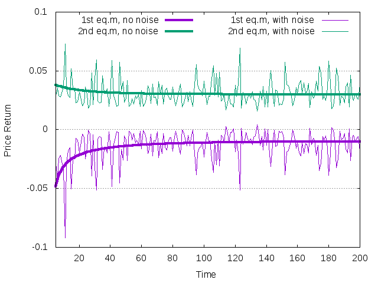
Figure 3: Two possible attractors with two fundamentalist agents
In the first case both agents survive and the trajectory converges to the no-equity-premium equilibrium with price return equal to \(r=-y + r_f\), where \(y\) is the average yield and \(r_f\) is the risk-free return. With the considered values it is \(r=-0.01\). In the second case only the first agent survives and price return is determined through the EMC. In addition, in the same plot we show noisy versions of both trajectories generated with
naif -O r -t 200 -R mean=1 -D type=1,mean=.02,stdev=0.01 -r .01 < test02_1.cfg naif -O r -t 200 -R mean=1 -D type=1,mean=.02,stdev=0.01 -r .01 < test02_2.cfg
The noisy trajectories represent mirror images of each other with respect to the line `rf = .01`. The reason is that in the case of the constant investment functions, the noise of the return is completely generated by the noise on the yield, and proportional to the term \(\sum_i w_i x^2_i / \sum_i w_i x_i (1-x_i)>\) where \(w_i\) and \(x_i\) are the wealth and the risky investment share of agent \(i\). This term is equal to -1 in the first equilibrium and +1 in the second.
The case of multiple equilibria can be illustrated in the phase diagram with the EMC. On the vertical axes we will print the average investment share weighted by the agents' relative wealth. In the first, no-equity-premium equilibrium, the average share converges to zero, while in the second equilibrium the average share converges to the individual share of the first, surviving agent.
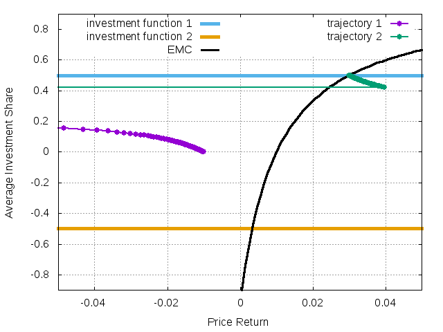
Figure 4: The EMC plane with two possible histories in a market with two fundamentalist agents
It is important to keep in mind that the model gives stationary
trajectories in terms of returns. The resulting dynamics in term of
price can be easily understood. In naif one can print the time
evolution of different variables through the option -O. Let us analyze
separatly how the different variables evolve in the two cases of a
Non-equity-premium equilibrium and Equilibrium with one survivor.
Non-equity-premium equilibrium
The evolution of price and wealth can be obtained using the options -O p and -O w
naif -O p -t 100 -R mean=1 -D mean=.02 -r .01 < test02_1.cfg naif -O w -t 100 -R mean=1 -D mean=.02 -r .01 < test02_1.cfg
The result is plotted below.
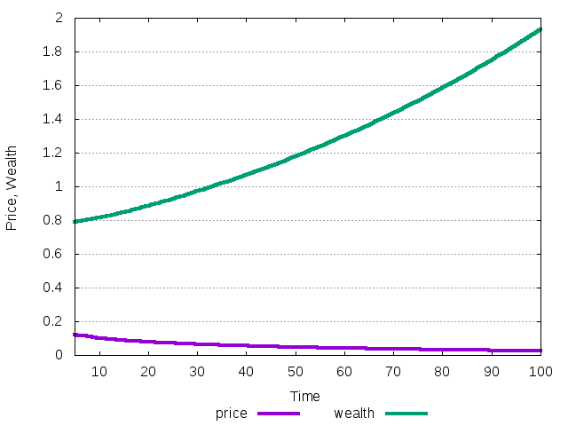
Figure 5: The evolution of price and total wealth during the transition to the no-equity-premium equilibrium.
In the no-equity-premium the price converges to 0 due to the negative return, but the total wealth is growing with the risk-free rate.
The evolution of the individual wealth of the two agents can be traced
using the option -Q W
naif -O W -t 100 -R mean=1 -D mean=.02 -r .01 < test02_1.cfg
Different columns contain the wealth of different agents. In this case the individual wealth evolve as follows
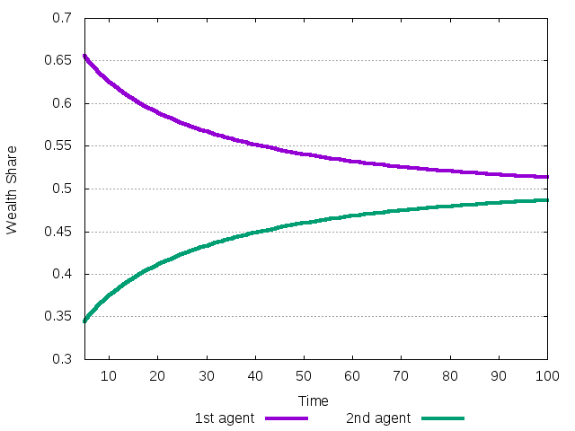
Figure 6: The evolution of investment shares during the transition to the no-equity premium equilibrium.
Initially the first agent has a larger wealth, but in equilibrium their wealth should be distributed in a way to guarantee zero average investment in the risky asset. Since their investment shares are 0.5 and -0.5, they must have the same wealth shares. During the transition, in relative terms the first agent loses money by investing half of his wealth into unprofitable risky asset. Instead, the second agent gains the wealth, keeping negative (short) position in the risky asset.
The evolution of the amount of risky stock the two agents own can be
traced using the option -O A
naif -O A -t 100 -R mean=1 -D mean=.02 -r .01 < test02_1.cfg
Different columns contain the amount os shares of different agents. In this case the amount of owned stock evolve as follows
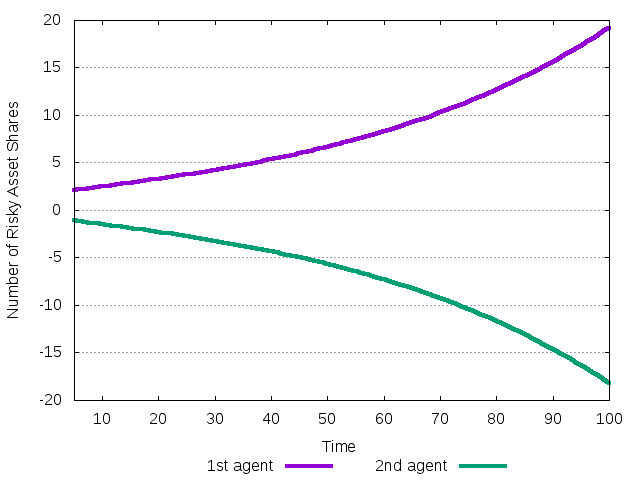
Figure 7: The evolution of the number of shares of the risky asset during the transition to the no-equity-premium equilibrium.
Since the total wealth of every agent is increasing, both of them change the absolute level of investment into the risky asset. The first agent borrows more and more shares from the second. The total sum of the possessions is always equal to 1, which is the (normalized) number of the risky asset's shares available in the market.
Analogously, the evolution of the amount of cash owned by the two
agents can be traced using the option -O B
naif -O B -t 100 -R mean=1 -D mean=.02 -r .01 < test02_1.cfg
It is reported in the following plot.
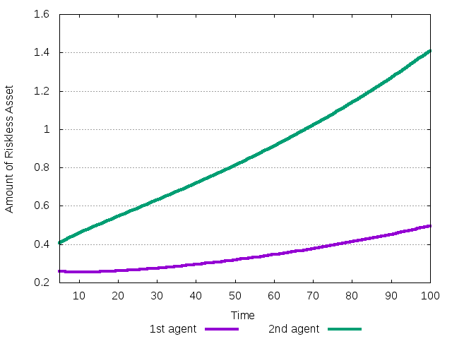
Figure 8: The evolution of the amount of cash during the transition to the no-equity premium equilibrium.
Generally, the amount of the riskless asset is growing when agents get the risk-free interest and the dividend per share of the riskless asset. In this case, the second agent has to pay the dividends to the first one, but with larger flow from the risk-free investment she is actually getting more money.
Equilibrium with one survivor
Uisng exatly the same commands of the previous section, just changing
test02_1.cfg with test02_2.cfg, we can analyze what happens to the
system when it converges to the second equilibrium.
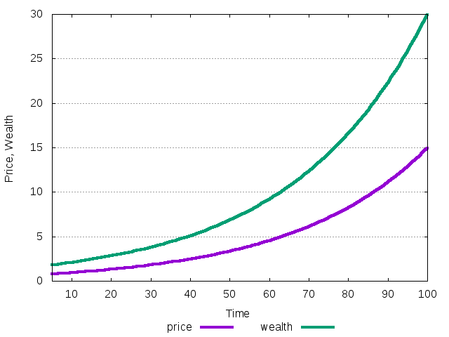
Figure 9: The evolution of price and total wealth during the transition to the equilibrium where first agent is the only survivor.
In this equilibrium the return is positive, so that the price is growing. Total wealth is growing at the same rate.
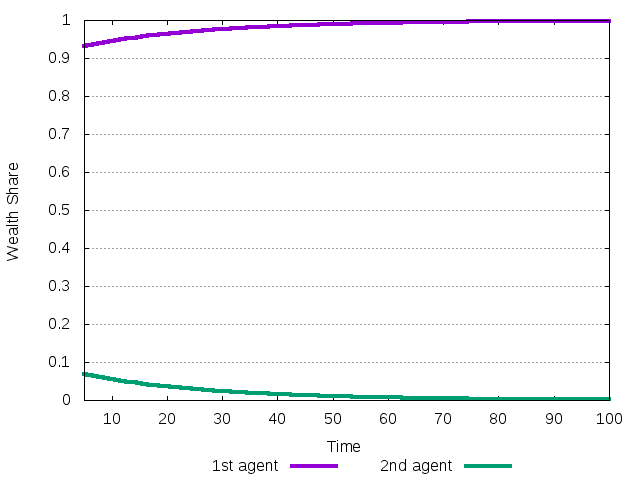
Figure 10: The evolution of investment shares during the transition to the equilibrium where first agent is the only survivor.
The first agent initially has larger wealth share and is able to get all the wealth asymptotically.
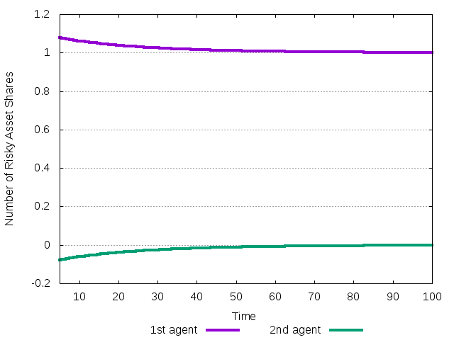
Figure 11: The evolution of the amount of the number of shares of the risky asset during the transition to the equilibrium where first agent is the only survivor.
The second agent is always short in the risky asset, but doing that it loses wealth, and can afford lending less and less shares of the risky asset.
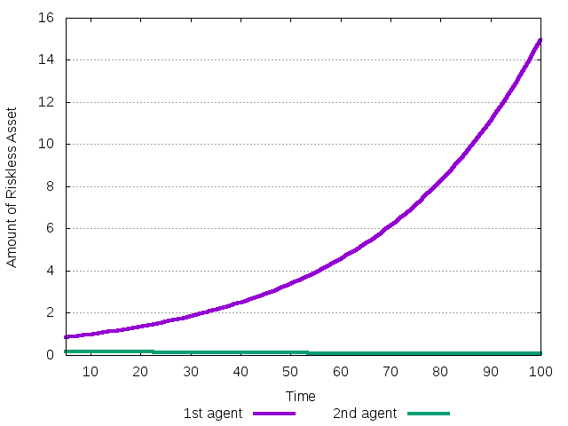
Figure 12: The evolution of the amount of cash during the transition to the equilibrium where first agent is the only survivor.
The second agent eventually loses all its money.
Example 3. Constant yield vs. growing dividend
In the first example, the trend-follower reacted only to variations in
price return. Now we consider an agent who follows the trend of the
TOTAL return, i.e. both of price return and dividend yield. In
addition, we assume that the agent reacts positively to increases of
the last realized dividend yield. Such an agent is defined in
test03.cfg as follows
x=.1,w=1,f=.5+.1*(ret1+yld1)+yld0
The following two commands print the first \(50\) returns both with and
without noise in yield. Notice that apart from the price return, two
initial yields are necessary to initialize the simulation. They are
provided by the option -Y mean=.02
naif -O r -t 50 -D type=1,mean=.02,stdev=0 -Y mean=.02 -r .01 < test03.cfg naif -O r -t 50 -D type=1,mean=.02,stdev=0.001 -Y mean=.02 -r .01 < test03.cfg
The time series of the dividend yield in the same market can be obtained using the following two commands
naif -O y -t 50 -D type=1,mean=.02,stdev=0 -Y mean=.02 -r .01 < test03.cfg naif -O y -t 50 -D type=1,mean=.02,stdev=0.001 -Y mean=.02 -r .01 < test03.cfg
The generated trajectories are reported below

Figure 13: Price return and dividend yield history for single trend-following agent. The yield is stationary in the market.
Notice that the picture is not qualitatively different from our first example. This is expected, as the assumption of constant mean for the dividend yields leads to (almost) the same investment strategy in equilibrium. However, since the investment function has changed, the level of equilibrium return will be different.
Next modify the example and consider the same agent operating in the
market where dividends are growing with a constant rate. The new time
series can be generated replacing -D type=1,mean=.02,stdev=0 with
the option -D type=3,mean=.02,stdev=0. Th resulting trajectories are
reported below
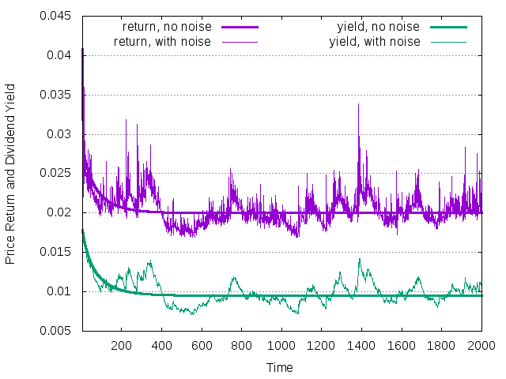
Figure 14: Price return and dividend yield history for single trend-following agent. The dividend follows the geometric random walk
For this dividend structure it is known that when average growth rate of the dividend is larger than the risk-free interest rate, in the equilibrium the price return is equal to the average growth rate of the dividend. Instead, the yield is defined through the plot with the corresponding EMC.
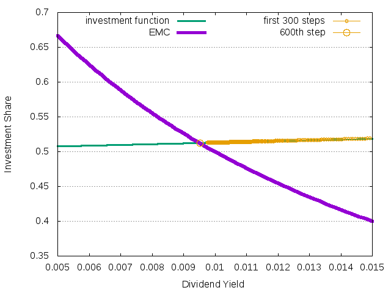
Figure 15: Determination of the equilibrium dividend yield by means of the EMC.
In this case the convergence is monotonic, so that the points in the phase space move very close to the investment function. The whole gnuplot code is given by::
g=.02
rf=.01
plot [0.005:0.015]\
0.5+0.1*(g+x)+x w l lt 2 lw 3 title "investment function",\
(g-rf)/(x+g-rf) w l lt 1 lw 5 title "EMC",\
"< ./naif -O yx -t 300 -D type=3,mean=.02,stdev=0 -Y mean=.02 -r .01 < test03.cfg" w lp lt 4 pt 6 lw 1 title "yield, no noise, first 300 steps",\
"< ./naif -O yx -T 600 -t 50 -D type=3,mean=.02,stdev=0 -Y mean=.02 -r .01 < test03.cfg" w lp lt 4 pt 6 ps 2 lw 1 title "yield, no noise, after 600 steps"
Example 4. Mean-variance optimizer with truncated investment function
So far we have considered agents that can have any investment share,
positive or negative. Now we consider the situation, typical for the
so-called Levy-Levy-Solomon (LLS) microscopic simulation model, in
which agents predict the next total return as average of \(L\) past
returns and, furthermore, are not allowed to have short positions. The
last requirement confines the investment functions between, say,
\(0.01\) and \(0.99\). For example, an agent with memory span \(L=5\), that
is considering the last 5 returns to compute expectations, is defined
in test04_1.cfg as follows
x=.1,w=1,f=.5*(cwr1_5+cwy1_5),l=0.01,u=0.99
One can compare the price series generated in the market by such an
agent, with the ones generated by similar agents having memory spans
\(L=10\) and \(L=15\). They are defined in test04_2.cfg and
test04_3.cfg, respectively, using
x=.1,w=1,f=.5*(cwr1_10+cwy1_10),l=0.01,u=0.99
and
x=.1,w=1,f=.5*(cwr1_15+cwy1_15),l=0.01,u=0.99
The commands
naif -O p -D type=3,mean=0.04,stdev=0 -Y mean=.02 -T 0 -t 400 -r 0 < test04_1.cfg naif -O p -D type=3,mean=0.04,stdev=0 -Y mean=.02 -T 0 -t 400 -r 0 < test04_2.cfg naif -O p -D type=3,mean=0.04,stdev=0 -Y mean=.02 -T 0 -t 400 -r 0 < test04_3.cfg
generate the following price trajectories for the three agents
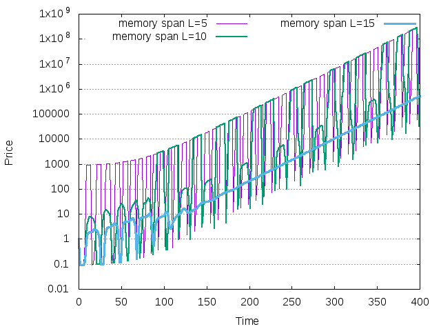
Figure 16: Price dynamics for single agent with truncated investment function in the market with geometrically growing dividend
To explain this dynamics, notice that the risk free interest rate was set to \(0\), which is less than the averare growth rate of the dividend (\(0.04\)). Therefore the price return in the unique stable equilibrium must be equal to \(0.04\), while the dividend yield is defined through the EMC. Apparently, only for the agent with long memory \(L=15\), this equilibrium is stable.
Long memory
Let us then, first, analyze the case \(L=15\). On the phase space of the EMC the dynamics looks as in the next diagram, generated with code
set xlabel "Dividend Yield"
set ylabel "Investment Share"
g=0.04
rf=0
plot [:][0:0.4]\
(g-rf)/(x+g-rf) w l lt 1 lw 5 title " EMC",\
0.5*(g+x) w l lt 2 lw 3 title " investment function",\
"< ./naif -O yx -T 150 -t 30 -D type=3,mean=.04,stdev=0 -r 0 < test04_3.cfg" w lp lt 4 pt 6 ps 1 lw 1 title " 30 steps after 150 transitory",\
"< ./naif -O yx -T 180 -t 30 -D type=3,mean=.04,stdev=0 -r 0 < test04_3.cfg" w lp lt 4 pt 6 ps 2 lw 1 title " next 30 steps"
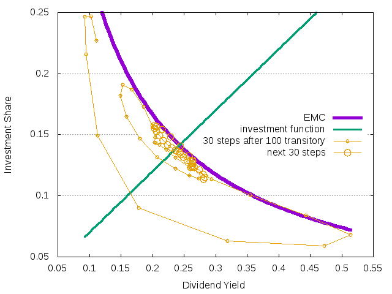
Figure 17: The EMC illsutrating the situation with one agent from the LLS model.
The convergence to the stable fixed point can be also seen on the time series
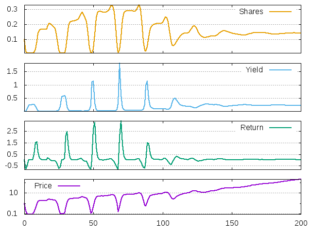
Figure 18: Price, return, dividend yield and investment share for the LLS agent with long memory. First 200 periods are shown.
The last plot is generated using the multiplot command in gnuplot
as follows
reset
set key horizontal left top
set grid y
set size 1,1
set multiplot
set size 1,0.25
set origin 0.0,0.0
set bmargin 2
set tmargin 0.5
set lmargin 5
set rmargin 2
set ylabel "Price"
set logscale y
plot [:]\
"< ./naif -O p -T 100 -t 200 -D type=3,mean=.04,stdev=0 -Y mean=.02 -r 0 < test04_3.cfg" w l lt 1 lw 2 notitle
unset logscale y
set bmargin 0.5
set format x ""
set xlabel ""
set origin 0.0,0.25
set ylabel "Return" offset -1
plot [:]\
"< ./naif -O r -T 100 -t 200 -D type=3,mean=.04,stdev=0 -Y mean=.02 -r 0 < test04_3.cfg" w l lt 2 lw 2 notitle
set origin 0.0,0.5
set ylabel "Yield" offset -1
plot [:]\
"< ./naif -O y -T 100 -t 200 -D type=3,mean=.04,stdev=0 -Y mean=.02 -r 0 < test04_3.cfg" w l lt 3 lw 2 notitle
set origin 0.0,0.75
set ylabel "Share" offset 1
plot [:]\
"< ./naif -O x -T 100 -t 200 -D type=3,mean=.04,stdev=0 -Y mean=.02 -r 0 < test04_3.cfg" w l lt 4 lw 2 notitle
unset multiplot
Let us have a closer look on the typical quasi-cyclical phase of the transitory pattern. Take a zoomed version of the previous plot between time steps 20 and 46.

Figure 19: Price, return, dividend yield and investment share for the LLS agent with long memory. 26 periods after 64 transitory steps.
In the beginning the agent invests only \(25\%\) of his wealth to the risky asset. This is a relatively low quantity, so that the price return is low. Furthermore, the return is negative, so that the price falls down. The falling price contributes to the growing yield, but this positive contribution to the agent's wealth is not enough to overcome the losses due to the price fall. The total return decreases and the investment function dictates to the agent to invest even less.
But the investment share is bounded from below. When the minimum level \(0.01\) is reached (at period 5 on the graph), the price is on its lowest but the dividend is still growing. Therefore, the dividend yield will be extremely high next period. High yield has two important effects. First, it contributes to the agents' wealth and, through the demand effect, brings return back to the positive level. Second, it also changes the agent's investment behavior. Due to these effect, now the boom period starts. The investment share and prices are growing, the return is positive, but the dividend yield falls down. Nevertheless, the economy time series looks stationary and it seems that nothing can stop the boom. But over another 15 periods the agent suddenly becomes less optimistic in his investments. Why does it happen? Because the agent forgot the periods 4-8, which were characterized by very high yield and return. The investment share starts to fall and the cycle repeats it again.
As we have seen, in this example, the dynamics come to the rest point. High memory span implies that the rare periods of high return changes get small weight in the agents' memory. This effect, together with relatively flatness of the investment function, explains the stability of dynamics.
Short memory
Consider now the case with short memory span, \(L=5\). The dynamics is unstable in this case, and the typical cycle looks as follows.
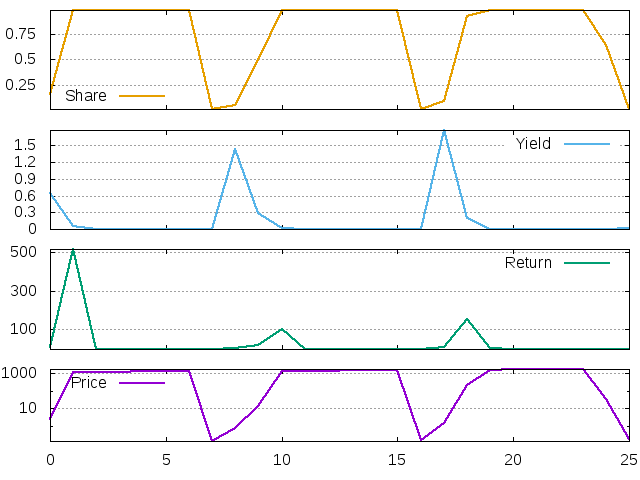
Figure 20: Price, return, dividend yield and investment share for the LLS agent with short memory. 26 periods after 50 transitory steps
The qualitative story is similar to the one previously told. Periods 1-6 are related to the boom. The investment share is on its highest level, therefore the price is high, therefore the dividend yield is low. At some point the boom comes to the end. We can see, that as in the previous example, the reason is that some high values of return and yield were forgotten by the agent.
In contrast with the previous example, the change is drammatic now: the agent immediately switches to the lowest possible investment share. The price falls down and the next period yield increases. This increase in the dividend yield pushes us the investment share and, afterwards, the prices. After two periods the agent again invests the maximum, the return jumps up and then immediately falls down, reacting, respectively, on the high increase of the investment share and the stabilization of it on the \(0.99\) level.
Now the time of relative stability starts. The agent, however, still remembers a period of high total return (when the yield was high), two other periods of huge return (the yield was low already, but prices grew very fast), and also one period of huge crash. One after another, these periods leave the agent's memory, and when only the last period remains, the investment share falls down. The story repeats again.
Moderate memory
The moderate memory case, \(L=10\), is somewhere in between the previous two, as we can see below. Sometimes the yield generated by the low prices is high enough to trigger very strong (maximum) investment behavior, but sometimes it is not and the investment shares grows to the moderate level.
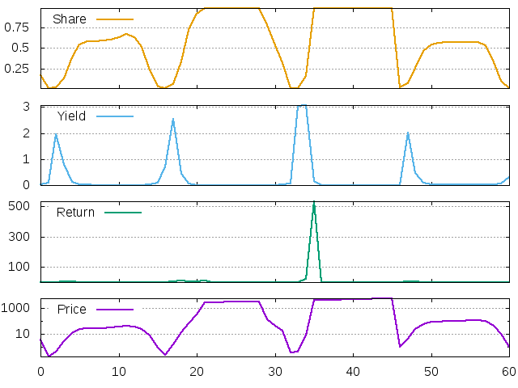
Figure 21: Price, return, dividend yield and investment share for the LLS agent with moderate memory. 61 period after 70 transitory steps
It is important to keep in mind that all the simulations we showed so far were competely deterministic. Some of the qualitative features of the system became clear. We can see that the crashes happen periodically and that the length of the period is related to the memory span of the agent. However, the seemingly unpredictable sizes of the booms and crashes on the last plot suggest that the system is chaotic or close to being chaotic.
We also observed some asymmetry in the time series, in the sense that the agents typically spend more time in the regime of the large investmet shares with low price returns. This is puzzling, since in the original contribution of Levy and Levy (1994), for example, one did not observe such an asymmetry. Compare also the last simulations with the same time series in the first few periods.
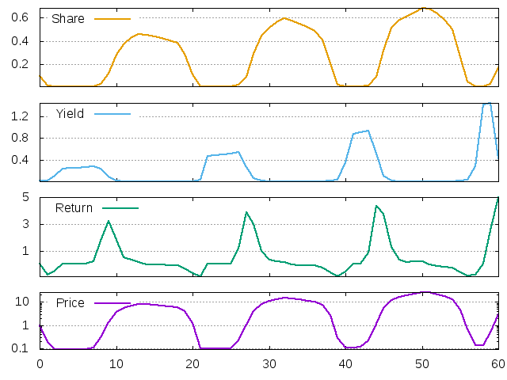
Figure 22: Price, return, dividend yield and investment share for the LLS agent with moderate memory
It seems that the symmetric situation (with equally long bear and bull market regimes) is typical only for transitory period, during which the price did not yet developed its trend. When the price starts to grow, its return becomes typically positive which contributes to the positive "bias" of the agent in the investment behavior.
Co-existence of different attractors
The simulations so-far suggest that the fixed point is unstable for the agent with moderate memory, L=10. This is not the case, however. It turns out that the point is actually stable, but it co-exists with the stable quasi-cycle which we observed so far. Consider the following commands
naif -O p -D type=3,mean=0.04,stdev=0 -Y mean=0.02 -T 0 -t 400 -r 0 < test04_2.cfg naif -O p -D type=3,mean=0.04,stdev=0 -Y mean=0.12 -T 0 -t 400 -r 0 < test04_2.cfg
The only difference is in the initial return time series submitted to the program. In the first case, it consists of 10 returns equal to 0.02, while in the second case it consists of 10 returns equal to 0.12. The resulting time series are quite different, however.
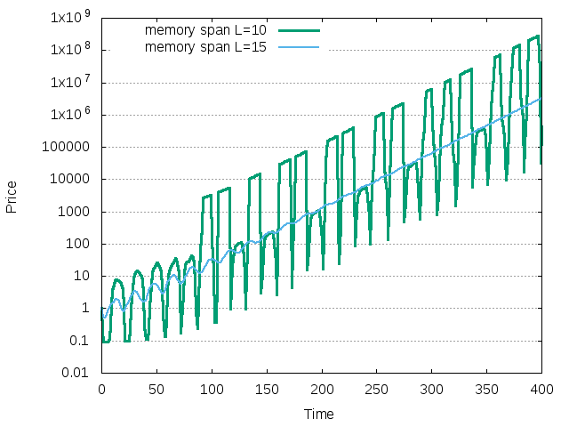
Figure 23: The price trajectories for two different initial conditions with memory L=10.
Role of noise
The previous finding stresses also the role of noise, which can switch the system from one attractor to another. Let us simulate the same three time series as in the first figure of this Section, but now assume that the dividend grows with a random rate. The following commands have been used
naif < test04_1.cfg -O p -D type=3,mean=0.04,stdev=0.05 -Y mean=.02 -T 0 -t 400 -r 0 naif < test04_2.cfg -O p -D type=3,mean=0.04,stdev=0.05 -Y mean=.02 -T 0 -t 400 -r 0 naif < test04_3.cfg -O p -D type=3,mean=0.04,stdev=0.05 -Y mean=.02 -T 0 -t 400 -r 0
and the resulting dynamics are shown below.
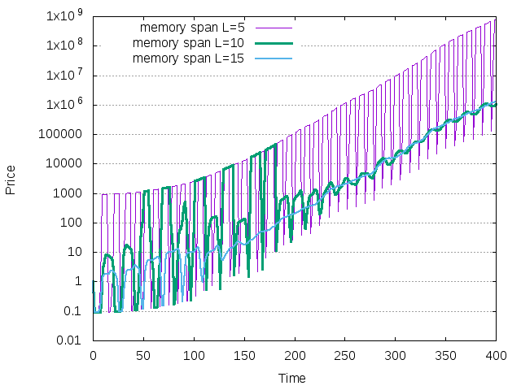
Figure 24: The EMC illsutrating the situation with one agent from the LLS model. Noise with standard deviation 0.05 has been added to the dividend growth rate.
The time series with moderate memory \(L=10\) is now stable (even if it is volatile due to noise added to the dividend growth rate).
Example 5. Two mean-variance optimizers with truncated investment functions
In our previous example the agent with memory span \(L=15\) generated
stable dynamics. Let us suppose that another agent enters the
market. It has the same memory span but smaller risk aversion. The
situation is described in test05_1.cfg as
x=.1,w=1,f=.5*(cwr1_15+cwy1_15),l=0.01,u=0.99 x=.1,w=1,f=3*(cwr1_15+cwy1_15),l=0.01,u=0.99
The dynamics can be illustrated by means of the EMC plot.
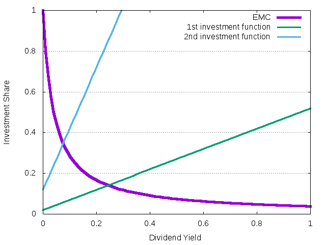
Figure 25: The EMC illustrating the situation with two agentw from the LLS model
The lower equilibrium (generated by the 1st agent) is now unstable, but the new equilibrium (generated by the 2nd agent) is not necessary stable. It suggests that the invasion of the market should be successful, i.e. the second agent (with smaller risk aversion) will be able to survive in the long run. Whether she will dominate the market or not will depend on the stability of her, new equilibrium.
It turns out that her memory span, \(L_2=15\), is too small to generate
stable equilibrium. As a comparison, let us consider the following
configurations in files: in test05_2.cfg we assume \(L=20\)
x=.1,w=1,f=.5*(cwr1_15+cwy1_15),l=0.01,u=0.99 x=.1,w=1,f=3*(cwr1_20+cwy1_20),l=0.01,u=0.99
in test05_3.cfg we assume \(L=30\)
x=.1,w=1,f=.5*(cwr1_15+cwy1_15),l=0.01,u=0.99 x=.1,w=1,f=3*(cwr1_30+cwy1_30),l=0.01,u=0.99
and in test05_4.cfg we assume respectively \(L=40\)
x=.1,w=1,f=.5*(cwr1_15+cwy1_15),l=0.01,u=0.99 x=.1,w=1,f=3*(cwr1_40+cwy1_40),l=0.01,u=0.99
Using the commands
naif -O p -D type=3,mean=0.04,stdev=0.05 -T 0 -t 500 -r 0 < test05_1.cfg naif -O p -D type=3,mean=0.04,stdev=0.05 -T 0 -t 500 -r 0 < test05_2.cfg naif -O p -D type=3,mean=0.04,stdev=0.05 -T 0 -t 500 -r 0 < test05_3.cfg naif -O p -D type=3,mean=0.04,stdev=0.05 -T 0 -t 500 -r 0 < test05_4.cfg
one obtains the following time series
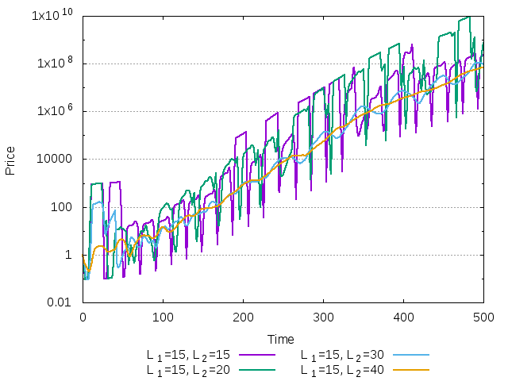
Figure 26: Price in the market with two agents
When the second agent has the memory span equal to 15 or 20, the dynamics is unstable and investment shares switch between maximum and minimum levels, leading to large price fluctuations. When her memory span is equal to 30, the dynamics (as we confirm below) slowly converges to the stable fixed point. When the memory span is \(40\), the stable fixed point is reached already after \(200\) time steps.
To see the evolution of the wealth shares in all the four cases, use the commands
naif -O X -D type=3,mean=0.04,stdev=0.05 -T 0 -t 500 -r 0 < test05_1.cfg naif -O X -D type=3,mean=0.04,stdev=0.05 -T 0 -t 500 -r 0 < test05_2.cfg naif -O X -D type=3,mean=0.04,stdev=0.05 -T 0 -t 500 -r 0 < test05_3.cfg naif -O X -D type=3,mean=0.04,stdev=0.05 -T 0 -t 500 -r 0 < test05_4.cfg
The following plot is obtained from the SECOND column of the output. It shows, therefore, the wealth share of the agent with smaller risk aversion.
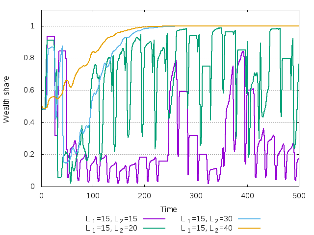
Figure 27: Wealth share of the agent with smaller risk aversion invading the market
When the equilibrium is unstable, both agents co-exist in the market in the long-run. Conversely, for \(L_2=30\) and \(L_2=40\), the second agent manages to wipe the first agent out of the market.
Finally, we show the time series for investment share, dividend yield, return and price after 1000 transitory steps for all four simulations. The case of \(L_2=30\) and \(L_2=40\) coincide.
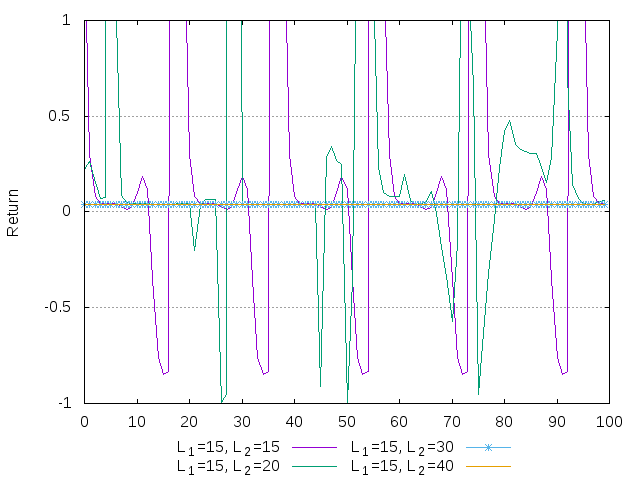
Figure 28: Return for the case of 2 LLS agents with different risk aversions and different memory spans. 100 periods after 3000 transitory steps.
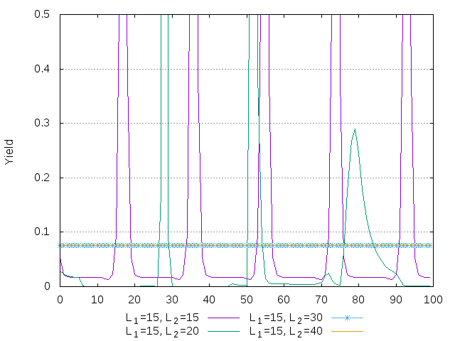
Figure 29: Dividend yield for the case of 2 LLS agents with different risk aversions and different memory spans. 100 periods after 3000 transitory steps.
Example 6. Dynamics close to instability
Numerical simulations of naif program help to understand better the
nature of bifurcations leading to instability of the system.
Losing stability through the Neimark-Sacker bifurcation with increasing investment function
The most common way of losing stability is through the Neimark-Sacker
bifurcation (when two complex multipliers cross the unit circle). In
test06_1.cfg we define the agent as
x=0.05,w=1,f=0.05+0.0474*ret1
Consider the case of constant yield (equal to \(0.02\)) with riskfree
interest rate 0. Under these economic conditions, the investment
function above leads to the equilibrium return 0.001054. This point is
stable, but it is very close to the stability border. Indeed, the two
complex conjugated multipliers have modulus \(0.99847\). We also
consider specification in test06_2.cfg
x=0.05,w=1,f=0.05+0.0475*ret1
which also leads to the stable point with modulus of roots
\(0.99953\). (The small change of investment function leads also to
small shift in the fixed point.) Finally, in test06_3.cfg we
define::
x=0.05,w=1,f=0.05+0.0476*ret1
This investment function leads to unstable equilibrium with modulus of multipliers equal to \(1.00058\).
In order to guarantee that initial point belongs to the basin of attractor, we carefully specify initial conditions both in the config file (x=0.05) and in the command line (-R mean=0.001) using the command
naif -O r -T 10000 -t 100 -D mean=.02 -R mean=0.001 -r 0 < test06_2.cfg
The next plot shows how the dynamics in the first two (stable) cases look like after a long transitory period.
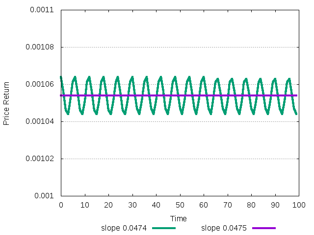
Figure 30: Return dynamics of the stable system close to instability after 10000 transitory period
In the unstable case the oscillating dynamics is diverging and never settles down to the periodic or quasi-periodic attractor:
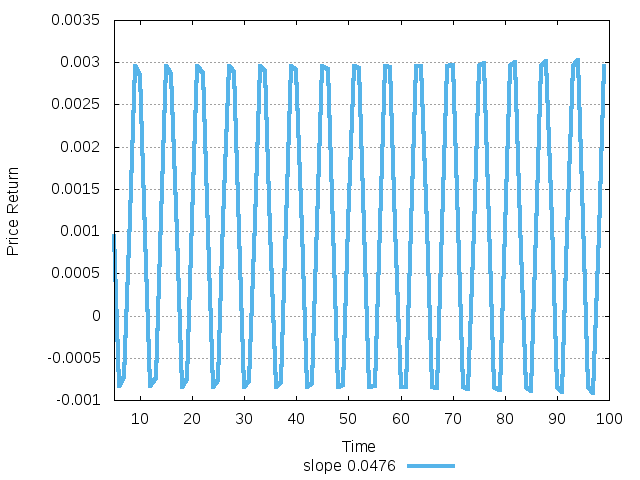
Figure 31: Diverging return dynamics of unstable system.
It suggests that in this case the NS bifurcation is subcritical (i.e. before bifurcation the unstable quasi-periodic solution coexists with stable fixed point)
Similar scenario can be observed in the case when agent has the same
investment function, but consideres the average of last two
observations. It leads to the stabilization of the same fixed point
(for given slope), but for larger slopes the system again undergoes
subcritical Neimark-Sacker bifurcation. The next two plots use files
test06_4.cfg
x=0.05,w=1,f=0.05+0.067*cwr1_2
and test06_5.cfg
x=0.05,w=1,f=0.05+0.0675*cwr1_2

Figure 32: Return dynamics of the stable system close to instability after 10000 transitory period.
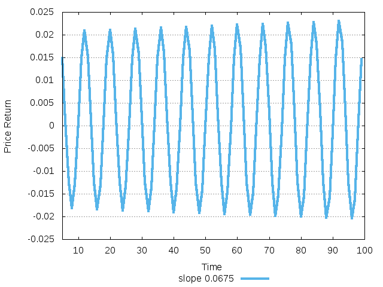
Figure 33: Diverging return dynamics of unstable system.
Losing stability through the Neimark-Sacker bifurcation with decreasing investment function
Interesting example of NS bifurcation happens when agent's investment
function is decreasing. If the memory span of such agent is odd, say
1, then the flip bifrucation takes place. (This situation we consider
in the next Section.) But when the memory span is even, as 2 or 4,
then the typical bifurcation is again Neimark-Sacker. In file
test06_6.cfg we consider::
x=0.4932,w=1,f=0.5-0.349*cwr1_2
and compare it with agent in test06_7.cfg
x=0.4932,w=1,f=0.5-0.35*cwr1_2
In both cases agents have decreasing function of average of past 2 returns. In the former case two complex multipliers have modulus equal to \(0.999564\), while in the latter case, the modulus are \(1.00071\). Therefore, commands
naif -O r -T 10000 -t 50 -D mean=.02 -R mean=0.01946 -r 0 < test06_6.cfg naif -O r -T 10000 -t 50 -D mean=.02 -R mean=0.01946 -r 0 < test06_7.cfg
should generate stable and unstable trajectories, respectively. The next plot shows the result
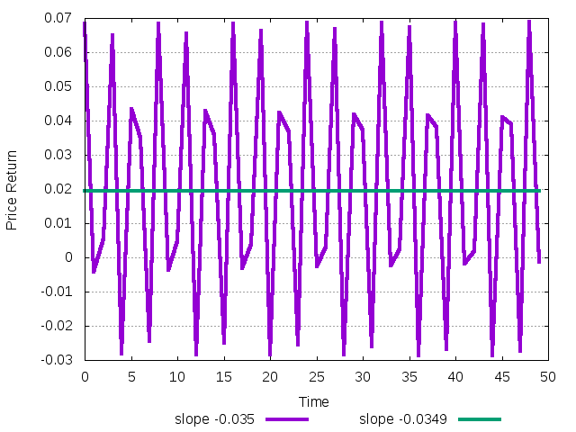
Figure 34: Dynamics of system with memory span 2 and decreasing investment function for stable and unstable situations about NEIMARK-SACKER bifurcation.
Now the system gets to the quiasi-periodic trajectory immediately after the Neimark-Sacker bifurcation. Thus, in this case the bifurcation seems to be supercritical.
Losing stability through the flip bifurcation with decreasing investment function
Occasionally the system loses its stability through the flip
bifurcation. Analysis shows that it can happen, for example, when
agent with decreasing investment function and odd memory span crosses
the EMC too steeply. Consider two configuration files test06_8.cfg
and test06_9.cfg given as below
x=0.497,w=1,f=0.5-0.123*ret1
and
x=0.497,w=1,f=0.5-0.124*ret1
Numerical computations give multipliers -0.995829, 0.494072 in the former case and multipliers -1.00124, 0.4954 in the latter. Obviously, the fixed point undergoes the flip bifurcation.
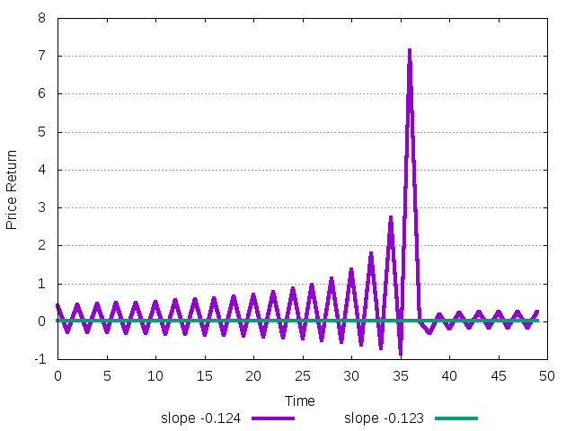
Figure 35: Dynamics of system with memory span 1 and decreasing investment function for stable and unstable situation about FLIP bifurcation.
Indeed, the plot shows that after stability the dynamics start to diverge being close to 2 cycle. Moreover, the oscillating trajectory is continuing to diverge, suggesting that the flip bifurcation is subcritical.
Example 8. Non-trivial Transitions between Different Equilibria
Even when the attractor of the dynamics is clear, the transitory
dynamics can be non-trivial and rather long. Consider the situation
described in test07_1.cfg as
x=0.1,w=.1,f=0.1 x=-0.1,w=-1,f=-0.1
This example is analogous to file:///Example 2/ we considered above. There are three equilibria in the market, stable no-equity-premium equilibrium with two survivors, stable equilibrium where only first agent survives, and unstable equilibrium where only the second agent survives. We take 0 risk free interest rate and with the help of command
naif -O r -t 2000 -D mean=.02 -r 0 < test07_1.cfg
observe long transitory from the unstable equilibrium with second survivor to the stable equilibrium with first survivor. In all the following plots the total length of simulation is 2000 periods.
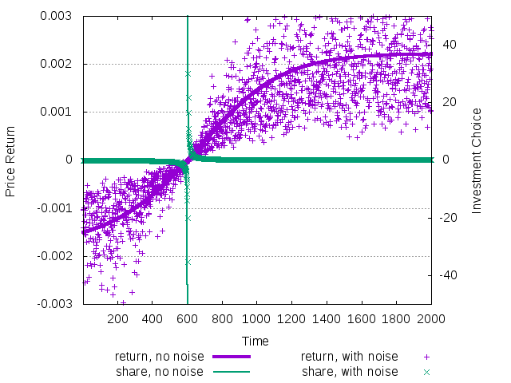
Figure 36: The evolution of price return (left scale) and average wealth share (right scale) during the transition from unstable to stable equilibrium
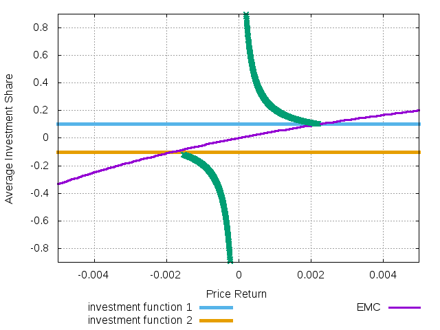
Figure 37: The evolution of price and average wealth share on the EMC
The strange feature of the transitory dynamics is that while the price return smoothly evolves from the negative level in the unstable equilibrium to the positive level in the stable one, the average investment share has a point of discontinuity.
To understand this transition, notice that the initialization of
agents in test07_1.cfg gives the second agent negative initial
wealth (which is interpreted as debt in this case) and also negative
investment share (which implies normal, positive position in the risky
asset). Thus, overall she starts with positive number of shares of the
risky asset and with big negative amount of cash. Furthermore, the
total initial wealth equal to sum of \(0.1\) and \(-1\) is also negative.
The initial conditions then imply that price starts to fall down, but that the wealth grows due to the positive dividend yield. At some point wealth reaches level 0. At this moment we observe discontinuity: positive wealth of the first agent immediately translates to the positive wealth share, while it was always negative before. The opposite happens with the wealth of the second agent. Then, the wealth continues to grow with asymptotical growth rate equal to the equilibrium rate of return.
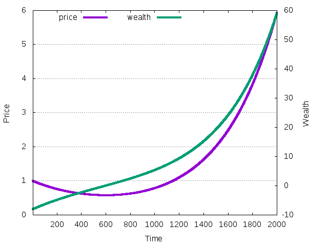
Figure 38: The evolution of price (left scale) and total wealth (right scale) during the transition from unstable to stable equilibrium
The price return was negative in the beginning, so the price falled. Instead, the wealth, which is initially negative, grew because of the high dividend yield. When wealth undergoes transition from positive to negative, the price return also becomes positive and price starts to grow.
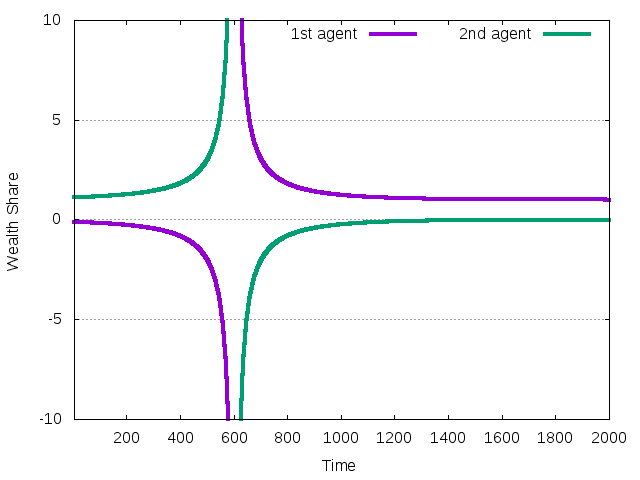
Figure 39: The evolution of wealth shares during the transition
Wealth of the first agent is always positive and growing. Until the total wealth is negative, it translates to the negative decreasing wealth share. Then it becomes positive and it reaches 1 when the second agent disappears from the market.
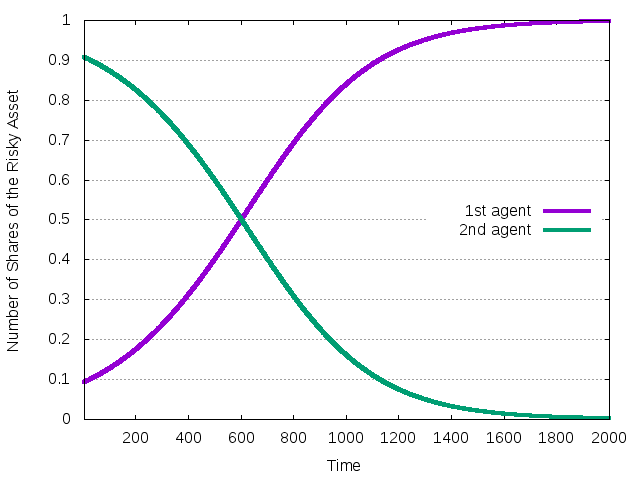
Figure 40: The evolution of the number of shares of the risky asset during the transition
First agent has very good timing. His share of the risky asset grows as the return for the asset grows.
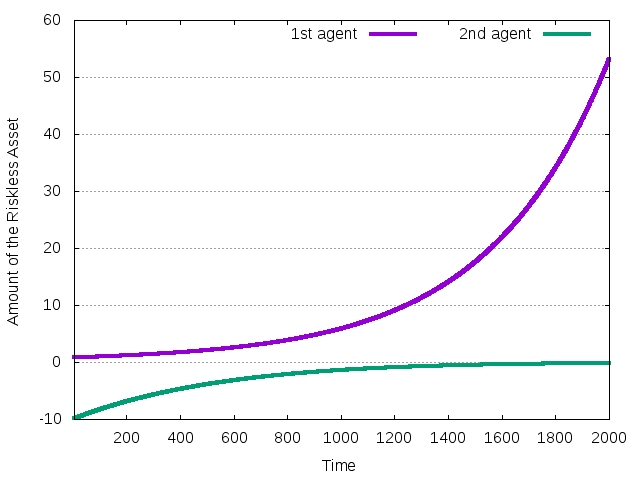
Figure 41: The evolution of the amount of cash during the transition
Second agent starts with negative cash. She improves her position by selling short the risky asset, which is, however, better than the riskless in average.
Generating many similar agents
Using the syntax : in the configuration file it is possible to
generate multiple copy of the same agent. Sometimes, however, it is
useful to generate many agents who are variation with respect a single
baseline model. This can be easily achieved using the ability of the
Unix zsh to manipulate arithmetic expressions. For instance consider
the agent description::
x=.5,w=1,f=.5+.1*ret1
in test01.cgf. One can generate many similar agents with the
following simple script
setopt INTERACTIVE_COMMENTS for i in {1..100}; do # generate uniform r.v. in [0,1) eps=$(( RANDOM/32767.0 )); # scale the r.v. eps=$(( .1+.01*eps)); # generate the investment function echo "x=.1,w=1,f=.5+$eps*ret1"; done > file.cfg
then file.cfg contains the definition of 100 slightly different
traders. Notice that this script does not work in bash shell, as
it only performs integer operations.